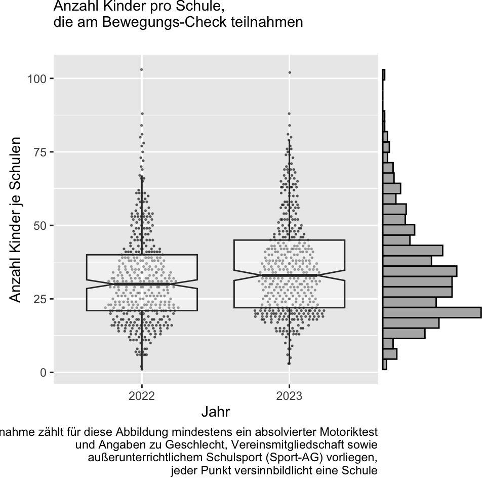
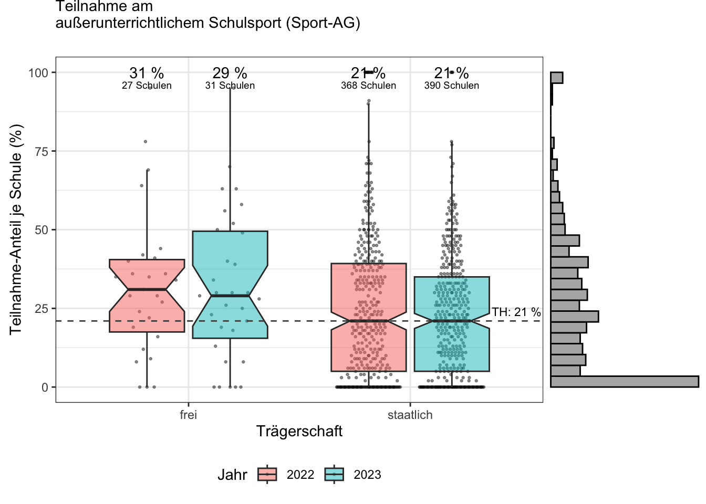
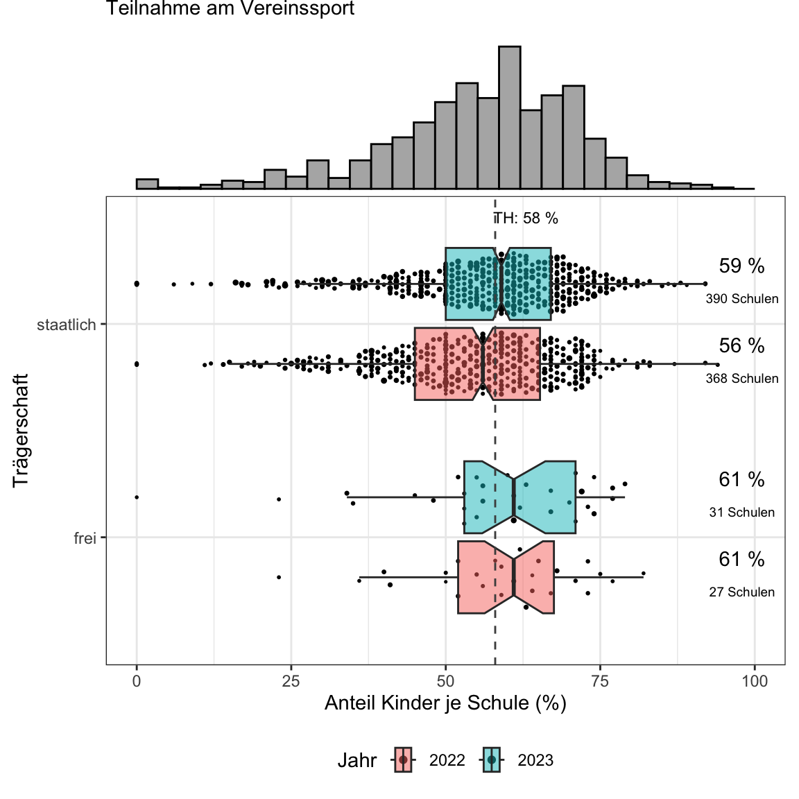
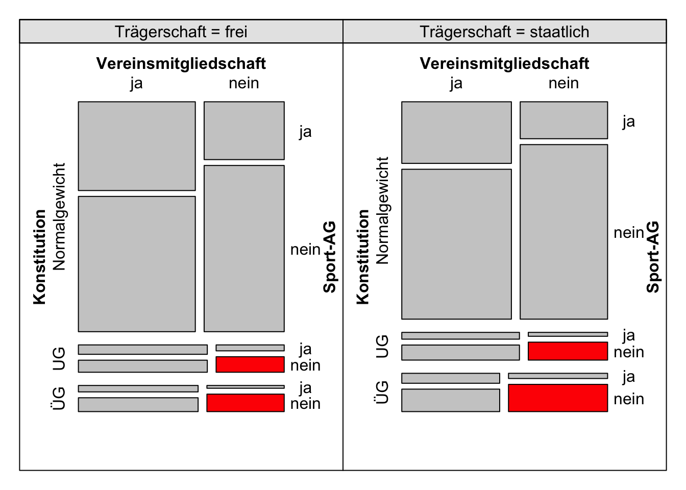
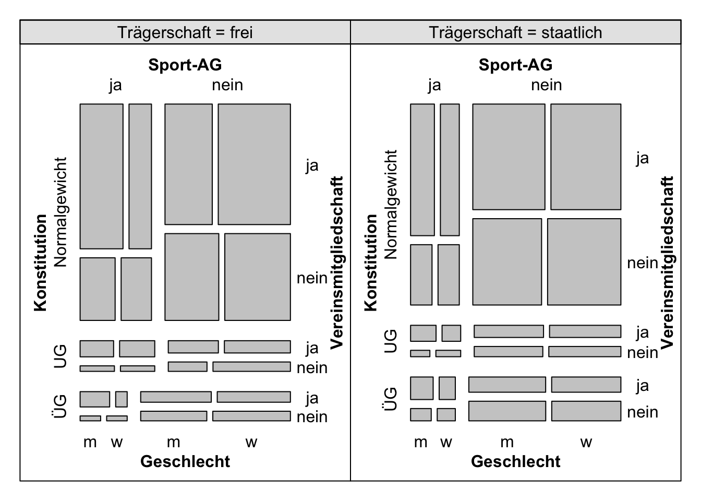
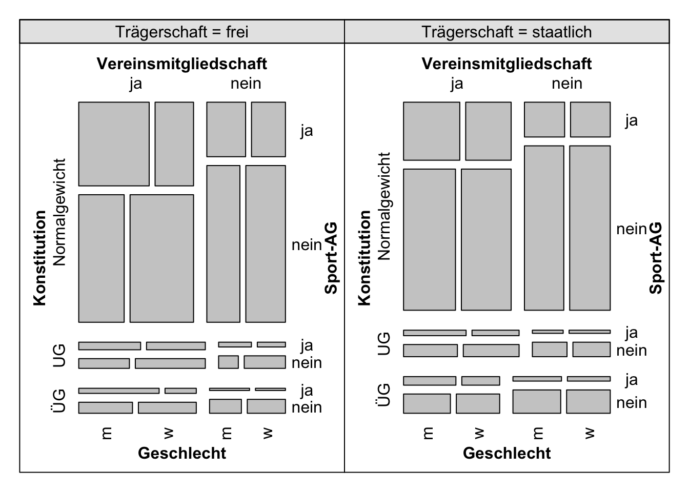

Trägerschaft
Bewegungs-Check-Teilnehmerzahl je Schule
als Teilnahme zählt für diese Abbildung mindestens ein absolvierter Motoriktest sowie Angaben zu Vereinsmitgliedschaft und außerunterrichtlichem Schulsport (Sport-AG), jeder Punkt versinnbildlicht eine Schule
Durchführung des Bewegungs-Checks an Mehrzahl der Thüringer Grundschulen seit dem Schuljahr 2022/2023 (verpflichtende Einführung)
Kreuztabelle Thüringen
- Berechnung auf Datengrundlage der Schuljahre 2022/2023 und 2023/2024 mit den Bedingungen, dass nur Zählungen einfließen, bei denen (i) an mindestens einem Test teilngenommen wurde und freiwillige Angaben zu (ii) Vereinsmitgliedschaft und (iii) Sport-AG existieren
| Jahr | in freier Trägerschaft | staatlich | ||||
|---|---|---|---|---|---|---|
| Vereinsmitgliedschaft | ja | nein | Total | ja | nein | Total |
| Sport-Ag | ||||||
| ja | 333 (24%) | 140 (9.9%) | 473 (34%) | 4,336 (16%) | 2,058 (7.7%) | 6,394 (24%) |
| nein | 514 (36%) | 423 (30%) | 937 (66%) | 10,353 (39%) | 9,849 (37%) | 20,202 (76%) |
| Total | 847 (60%) | 563 (40%) | 1,410 (100%) | 14,689 (55%) | 11,907 (45%) | 26,596 (100%) |
Trägerschaft, Sport-AG und Vereinssport-Teilnahme
jeder Punkt versinnbildlicht eine Schule, wobei nur die Schulen für die folgenden beiden Grafik berücksichtigt wurden, an denen mindestens 10 Kinder an mindestens einem Motorik-Test teilnahmen sowie Angaben zu Geschlecht, möglicher Vereins- und Schulsport-AG-Teilnahme vorliegen;
Box-Plots wurden nicht gewichtet nach Schulgröße (Anzahl an Kindern pro Schule) erstellt; bzw. jede Schule geht gleichwertig in die Berechnung der Mediane und Quartilsgrenzen ein
Prozentwerte rechts der Boxplots sind Medianwert


Trägerschaft, Sport-Mitgliedschaften und Konstitution
- Zuordnungen der Kinder in Normal-, Unter- (UG) und Übergewichtsbereiche (ÜG) wurden mit Hilfe der Perzentilgrenzen aus der folgenden Publikation bewerkstelligt:
Kromeyer-Hauschild, K., Wabitsch, M., Kunze, D., Geller, F., Geiß, H. C., Hesse, V., von Hippel, A., Jaeger, U., Johnsen, D., Korte, W., Menner, K., Müller, G., Müller, J. M., Niemann-Pilatus, A., Remer, T., Schaefer, F., Wittchen, H.-U., Zabransky, S., Zellner, K., … Hebebrand, J. (2001). Perzentile für den Body-mass-Index für das Kindes- und Jugendalter unter Heranziehung verschiedener deutscher Stichproben. Monatsschrift Kinderheilkunde, 149(8), 807–818.
- auf eine Differenzierung zwischen “ausgeprägtem Untergewicht” und “Untergewicht” wurde verzichtet, ebenso auf die Differenzierung zwischen “Adipositas” und “Übergewicht” (ÜG)



Wiederverwendung
Zitat
Bitte zitieren Sie diese Arbeit als:
Wöhrl, T., & Bähr, F. (2024, July 4). Trägerschaft. https://bekigeki.github.io/018.html